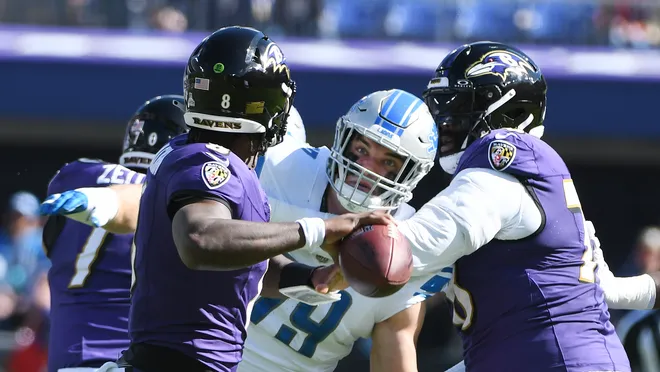

The Baltimore Ravens take on the Detroit Lions
Sundays game between the Baltimore Ravens and the Detroit lions was a showcase of the high-powered offense that the Ravens had been looking for since Week 1 of the season. The Ravens come in to week 7 with a record of 4-2 while the visting Lions team is at 5-1 on the season. The Lions were heavy favorites, despite the close records of both teams. Baltimore scored early in the contest and didn't take their foot off the gas until the end of the game. The Lions couldn't seem to find a rythem on offense or defense and were almost shut out by the Ravens.
Final Score Ravens 38 - Lions 6

Turning the corner?
Until today the Ravens had seemed to start out strong, only to lose steam in the second half. The first 6 weeks of the season all seemed to follow the same recipe. The team would capitalize early, have the other team backed in to a corner and then finally end up shooting themselves in the food with a costly turnover. Conservative playcalling after halftime also made most of the games a lot closer than they needed to be. That all seemed to change today, even with a turnover in the redzone just before the half, the team was able to rally and not let it slow them down. Things may be changing in Baltimore and with this star-studded offense and stout defense, that can only be a good thing.